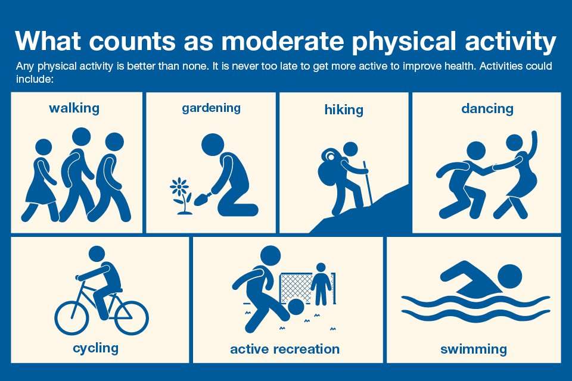

Physical Health
What is Physical Health?
Physical Health is essential to the complete health of an individual; this includes everything from overall well-being to physical fitness. It can also be defined as a state of physical well-being in which the individual is able to perform daily activities without problems.
Why is Physical Health is important?
Physical activity or exercise can improve your health and reduce the risk of developing several diseases like type 2 diabetes, cancer and cardiovascular disease. Physical activity and exercise can have immediate and long-term health benefits. Most importantly, regular activity can improve your quality of life.
On this page
- Overview
- Benefit of Physical Health
- Things that take care of your Physical Health
- How is Physical and Mental Health connected to each other?
Overview
Physical health and mental health are strongly connected. Taking care of your physical health is scientifically shown to improve mental wellbeing, and vice versa. If one declines, the other can be affected too.
A balanced diet, proper sleep, and cutting down unhealthy habits such as smoking, alcohol, and drugs are some of the key physical health factors that can promote mental wellbeing. Some of the things that can affect mental wellbeing are stress, working too much, and being too inactive.
Studies are showing more and more that a holistic approach to health – linking physical, social, emotional, and mental health – is necessary for mental wellbeing. This approach also helps a great deal with managing and recovering from mental illness.
For more information, take a look at our pages on food (opens in a new tab), sleep (opens in a new tab), and being active (opens in a new tab).
Benefits of Physical Health
If you are regularly physically active, you may:
- Reduce your risk of a heart attack
- Manage your weight better
- Have a lower blood cholesterol level
- Lower the risk of type 2 diabetes and some cancers
- Have lower blood pressure
- Feel better – with more energy, a better mood, feel more relaxed and sleep better.
Things that take care of your Physical Health
As you alredy how important physical health is to our body, these are some simple things that you can do to improve your daily life:
- Sleep
- Stick to a sleep schedule.Go to bed and wake up at the same time every day, even on the weekends.Build consistency!
- Get 7-8 Hours/day of sleep.Try to build your sleep schedule to have around 7-8hours of sleep to get all the benefits from sleeping
- Get some exercise every day.But not close to bedtime.
- Go outsiteTry to get natural sunlight for at least 30 minutes every day.
- Avoid Nicotine and CaffeineBoth are stimulants that keep you awake. Caffeine can take 6–8 hours to wear off completely.
- Don't take naps after mid-afternoonAnd keep them short.
- Create a good sleeping environment.Keep the temperature cool if possible. Get rid of sound and light distractions. Make it dark. Silence your cell phone.
- Limit electronics before bed.Try reading a book, listening to soothing music, or another relaxing activity instead.
- Avoid alcohol and large meals before bedtime.Both can prevent deep, restorative sleep.
- Exercise
- Exercise may block negative thoughts or distract you from daily worries.
- Exercising with others provides an opportunity for increased social contact.
- Increased fitness may lift your mood and improve your sleep patterns.
- Exercise may also change levels of chemicals in your brain, such as serotonin, endorphins and stress hormones.
- Hydration
- Helps maximize physical performance
- Improved brain performance
- Kidney stone prevention
- Improved detoxification
- Diet
- Staples like cereals (wheat, barley, rye, maize or rice) or starchy tubers or roots (potato, yam, taro or cassava).
- Legumes (lentils and beans).
- Fruit and vegetables.
- Foods from animal sources (meat, fish, eggs and milk).>
One of the most IMPORTANT thing in our routine. Getting a good quality sleep is very beneficial for your body as it increase your daily-life productivity and your brain mood and performance.
Not getting enough quality sleep regularly raises the risk of many diseases and disorders. These range from heart disease and stroke to obesity and dementia.
There's more to good sleep than just the hours spent in bed. "Healthy sleep emcompasses three major things,"."One is how much sleep you get.Another is sleep quality- that you get uninterrupted and refreshing sleep.The last is a consistent sleep schedule"
People who work the night shift or irregular schedules may find getting quality sleep extra challenging. And times of great stress—like the current pandemic—can disrupt our normal sleep routines. But there are many things you can do to improve your sleep.

Tip on getting a quality sleep
You know exercise is good for you, but do you know how good? From boosting your mood to improving your sex life, find out how exercise can improve your life.
Want to feel better, have more energy and even add years to your life? Just exercise.
The health benefits of regular exercise and physical activity are hard to ignore. Everyone benefits from exercise, regardless of age, sex or physical ability.
Spend atleast 30min - 1 Hour per day doing exercise will improve your physical health and also your mental health. Your body will thank you for it! Believe Me !
Benefis of Exercise:
To learn more about exercise, check out our Physical Fitness tap to get more detail information about exercise.
Hydration plays a crucial role in Physical and Mental Health.
How important is Water & Hydration?
-> Some of us go days, weeks or more without drinking any straight water, but get it in lesser amounts from other sources, such as coffee, sodas, or other drinks, and some foods, most notably fruits, vegetables and clear soups. Since at least half of the composition of the human body is water, and every cell depends on it, that can’t be great for our physical health.
It is recommends for adult to drink atleast 3L of water everyday to give your body the hydration that they are looking for.
Benefit of Hydration :
If you don’t stay hydrated, your physical performance can suffer.
Dehydration can have a noticeable effect if you lose as little as 2% of your body’s water content. However, it isn’t uncommon for athletes to lose as much as 6–10% of their water weight via sweat.
This can lead to altered body temperature control, reduced motivation, and increased fatigue. It can also make exercise feel much more difficult, both physically and mentally.
Optimal hydration has been shown to prevent this from happening, and it may even reduce the oxidative stress that occurs during high intensity exercise. This isn’t surprising when you consider that muscle is about 80% water
If you exercise intensely and tend to sweat, staying hydrated can help you perform at your absolute best.
Even mild dehydration—as little as 2% fluid loss—can affect memory, mood, concentration, and reaction time. Adding just a few glasses of water to your daily intake can have a positive effect on cognition, stabilize your emotions, and even combat feelings of anxiety. This is especially important for older adults who are at higher risk for both dehydration and impaired cognitive function.
Kidney stones are clumps of mineral crystals that form in the urinary tract. If you've ever experienced one, you know how painful they can be. Consuming adequate amounts of water each day can help dilute the concentration of minerals in your urinary tract and make stones less likely. Water also helps flush harmful bacteria from your bladder and can aid in preventing urinary tract infections (UTIs).
Sufficient water intake supports your body’s natural detoxification systems, which remove waste and harmful substances through urination, breathing, perspiration, and bowel movements. Supporting your own powerful, built-in detox processes can help enhance your overall health.
A healthy diet is essential for good health and nutrition.
It protects you against many chronic noncommunicable diseases, such as heart disease, diabetes and cancer. Eating a variety of foods and consuming less salt, sugars and saturated and industrially-produced trans-fats, are essential for healthy diet.
A healthy diet comprises a combination of different foods. These include: